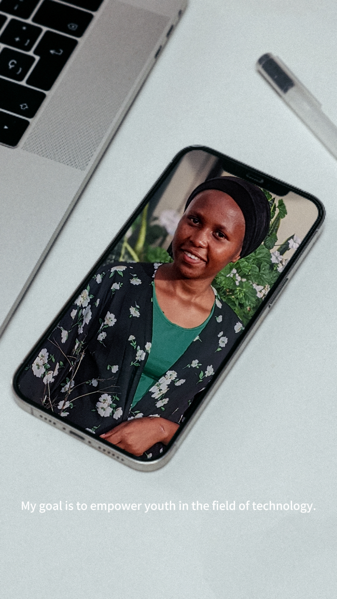

Notifications
Twitter Blue
Notifications
Twitter Blue

38min
React Interview is Not Just Quastion & Answer
It Includes Coding Questions As Well
I updated my React Interview Questions Guide with Coding Questions
If you had it then refresh it you will get it or else
To get it
- Like
- Reply"React"
- Follow me(so I can DM)